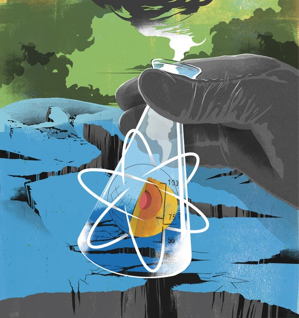
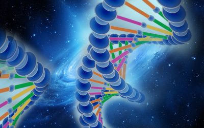
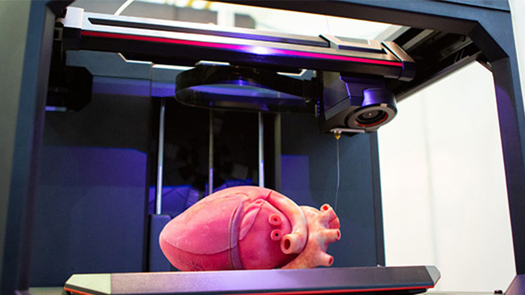
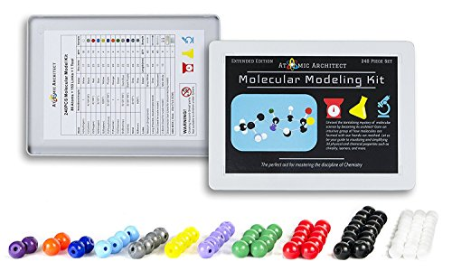

The world is heading into a new ERA with science being at the center of all revolutionary breakthroughs. Our company is completely dedicated to developing helpful medical remedies that will make millions of lives better. We believe that our scientists are the best in the world. This is why we strive to provide our customers with the best medical and technological solutions. In 2040 - where will we be – a disease-free humanity, producing super-foods, or even super-humans? We welcome you to explore what the future of science could like, meet the people making that happen, and discover how they intend to do it.
This is the first 60,000 'letters' of chromosome one of the draft public domain human genome, formatted in arbitrary 60 column lines. This represents a portion of the structure of the double helix DNA molecule. Each letter in the text (A, C, G and T) represents one 'base pair' of nucleotides. They are called pairs because each nucleotide has a complementary one on the other strand. The letters are grouped into sets of three, known as 'codons'. Each codon is translated into one of 20 amino acids. The sequence of amino acids determines how proteins are constructed, which are the building blocks of all life on earth.
If you want to be picky, this is actually an arbitrary set of base pairs from an arbitrary human chromosome. However, this particular sequence is of historical importance, because it was at the start of the first file of the human genome project released to the Internet.
Strangely enough, the symbol for medicine since distant antiquity has been two snakes entwined in a spiral pattern around a staff. Foreshadowing? Ancient knowledge? This coincidence has yet to be explained.
Human Genome: First 1000 lines of Chromosome 1
Inventor Ray Kurzweil already has changed our world by figuring out how to enable computers to read printed words, recognize human speech and synthesize music that's indistinguishable from that created by musicians playing real violins and cellos. But that's nothing compared to the future he envisions, in which machines will be able to think and feel as humans do ... except better.
In a 2005 essay, "The Singularity is Near," Kurzweil predicted that by 2045, "non-biological intelligence will match the range and subtlety of human intelligence." From that point on, which futurists call "The Singularity," machines will eclipse the human brain. Not only will machines' escalating computational power and speed eventually enable them to handle information with an ease that humans can only dream of, but scientific advances in understanding how the human brain functions will also enable us to create mathematical models that can simulate human consciousness.
But don't worry about intelligent computers plotting to murder us puny humans, the way cyber-villains HAL 9000 and Skynet did in science fiction movies. A more likely scenario, Kurzweil predicts, is that tiny intelligent "nanobots" will be subtly be integrated into our bodies, enhancing our own abilities. Thus, the human of the future will no longer have to depend solely upon a hunk of wrinkly meat inside his or her skull. Instead, we'll all be part biological creature and part machine.

One of the most exciting future advances in science is 3-D bioprinting -- that is, the use of modified 3-D printers, which stack successive layers of material to create objects, or cells to construct living tissue. Researchers already have printed skin and vertebral disks and transplanted them into animal bodies successfully, but they're still years and possibly decades away from fashioning a complex organ such as a liver, kidney or heart for transplant, using a patient's own cells as raw material.
Nevertheless, Tony Atala, director of the Wake Forest Institute for Regenerative Medicine, told the Washington Post in 2011 that he envisions transplantation someday following what he calls "the Dell computer model," in which a transplant surgeon will be able to order a complete organ with certain specs, just as he would pick out a hard drive or sound card for the PC on his desk. The biggest challenge, researchers say, is not in making the organ itself, but duplicating the complicated internal network of blood vessels that keeps a body part nourished and oxygenated. Some think a concerted government research effort -- the biological equivalent of the Manhattan Project -- could make it possible in as few as 10 years to print a transplantable human kidney.
But once that's accomplished, what's next may be even more astonishing. As bioprinting software pioneer Vladimir Mironov told the Post: "If one can bioprint functional human organ constructs, then bioprinting a whole human -- or whatever will be the name for such a creature -- is just a logical extension.
If you think 3-D bioprinting is a weird idea, you'll probably be totally dumbfounded by another, even more innovative concept: the notion of reproducing an object, or creating a new one outright, by putting it together molecule by molecule. Molecular manufacturing, as it's known, could revolutionize our entire civilization by enabling us to build machines or even buildings quickly and cheaply, according to precise specifications, and with virtually no defects.
The physics principles behind molecular manufacturing are maddeningly complex, but in greatly oversimplified words, it basically would involve creating a workforce of scores of tiny robots, called assemblers, who would guide chemical reactions and put together a few atoms at a time to create molecules, which in turn would become the building blocks of the object [source: Drexler]. We'll actually be able to "control the structure of matter," says Neil Jacobstein, chairman of the Institute for Molecular Manufacturing, which promotes research into the technology.
If and when molecular manufacturing becomes practical, it could radically alter the global balance of economic power, erasing the advantage that developing nations with low labor costs have in commodity manufacturing, and shifting the advantage to technological innovators.
We've grown accustomed to thinking of space travel as something that requires big, powerful rockets and complex spacecraft capable of re-entry and landing, an approach that costs an awful lot of money for each launch and requires a daunting amount of technical precision to pull off. Wouldn't it be easier if we could just get on an elevator and ride it slowly but steadily into orbital space, as if we're going for lunch to some restaurant on the top floor of a skyscraper?
Such a magical apparatus also would enable us to return to Earth just as easily, without having to experience the rigors and risks of rapid reentry through the Earth's atmosphere. Sounds a bit kooky, doesn't it? In fact, however, scientists have been envisioning a space elevator since Russian physicist Konstantin Tsiolkovsky, who was inspired by the Eiffel Tower, first proposed it back in 1895. Over the decades, a number of visionaries -- from the Russian astronaut Yuri Artsutanov to science fiction author Arthur C. Clarke -- have seconded the notion.
For a long time, the concept seemed hopelessly impractical because, according to Newtonian laws of motion, the tension on such a lengthy cable would be greater than the tensile strength of steel, causing it to snap. But with the advent of super-strong carbon nanotubes, 180 times tougher than steel, visionaries again are talking about the idea of building such an elevator, for which a cable would be threaded though the core of a geosynchronous satellite and attached to a counterweight approximately 62,000 miles above the Earth. One limitation, at least at this point, is that scientists have only been able to create a few centimeters of pure carbon nanotube, and they probably would need a vastly longer strand to make the elevator work. Even so, futurist Michio Kaku envisions that such an elevator might be built between 2070 and 2100.
According to a 2007 report by the Paris-based Organization for Economic Cooperation and Development, by 2070, rising sea levels due to climate change could have a devastating effect on coastal cities around the globe. As many as 150 million people would be at risk of having to flee flooded homes, and as much as $35 trillion in property would be at risk of ending up underwater [source: OECD]. We still might be able to stave off such a catastrophic scenario by dramatically reducing greenhouse gas emissions, but time is running out. That means low-lying communities may have no choice but to build higher and higher seawalls, or else relocate their populations.
But a Belgian architecture and design visionary, Vincent Callebaut, has suggested another alternative. What if, instead of fleeing the rising seas, we simply build new cities that float on them? In 2008, Callebaut unveiled on the Web his design for Lilypad, a 50,000-inhabitant floating city modeled in shape after the giant water lily native to the Amazonian basin. As a haven for climate change refugees, Lilypad would be a totally self-sustaining community, with aquatic gardens for growing food, a desalination plant to produce drinking water, and energy generation through solar, wind and wave power. Better yet, Lilypad would be outfitted with a titanium dioxide skin, capable of absorbing carbon dioxide from the atmosphere and making at least a small dent in global warming.